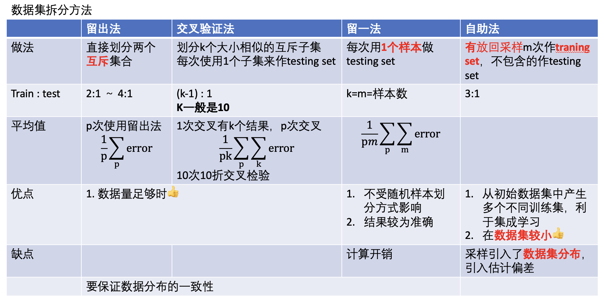
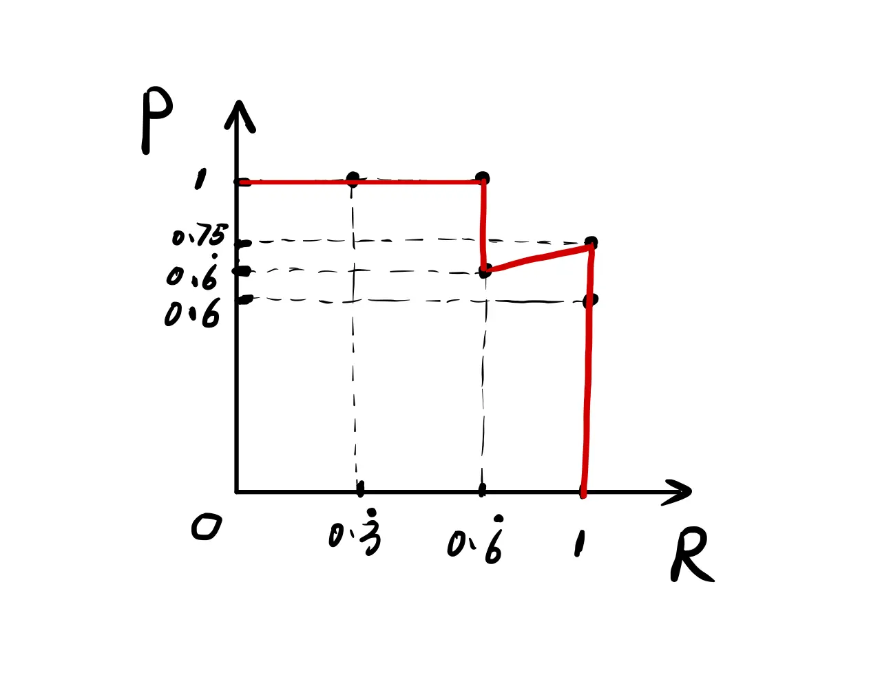
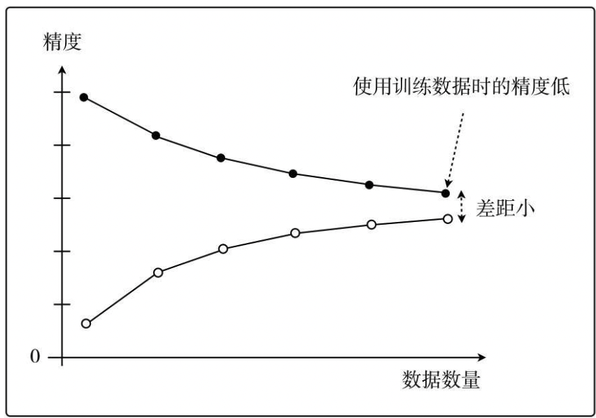

训练误差 近似 测试误差 测试误差 近似 泛化误差。
依据：训练集 & 测试集 独立同分布 地在数据空间中采样形成。
通过降低 训练误差 来让 测试误差 ⬇️，通过测量 测试误差 来衡量在整个数据集的 泛化性能 。
数据划分
留出法和k折交叉验证 最常用。
dataset D；training set S；testing set T

hold-out 留出法 。直接分成互斥大小不一两份，多次取误差平均。比例一般是
D=S∪T,S∩T=∅,S:T=2:1～4:1 k-fold cross- validation k折交叉验证 。分成k个大小相似，多次取误差平均。 p次k折交叉验证
D=D1∪D2∪⋯∪Dk,Di∩Dj=∅(i=j),k=10∣5∣20T=Di,S=D−Di,i=1…k Leave-One-Out LOO 留一法 。n折交叉验证，k=n=#样本数量。D−S=1 比较准确但计算成本大.
bootstrapping 自助法 有放回采样n次。从 n 个样本的数据集 D 有放回采样 n 次得到 D′
S=D′,T=D∖D′ 对样本而言，在 n 次采样中始终找不到：m→∞lim(1−m1)m=e1≈0.368⟹S:T=2:1
数据采样
stratified sampling 分层采样 。保留类比比例
评估指标
在英语中，error 和deviation 的含义是一样的，所以Mean Absolute Error 也可以叫做 Mean Absolute Deviation(MAD)
[机器学习基础，回归模型评估指标]
[机器学习笔记_混淆矩阵（Confusion Matrix]
分类
accuracy 准确率 。 分类正确的样本占总样本个数的比例.【正负一样重要】
allTP+TN
类别极度不平衡慎用(单纯准确率容易傻瓜判别)-> 类准确率
当有别的需要我们特殊关注：
“<u>搜索结果(判定为 P )</u>中有多少是用户感兴趣？”
TP+FPTP= precision
“<u>用户感兴趣(真实为 P )</u>有多少出现在搜索结果中？”
TP+FNTP= recall
precision 精确率 查准率 。分类正确的正样本个数占**判定为正**的样本个数的比例
TP+FP=～PTP recall sensitivity Sensitivity 召回率，灵敏度，TPR， 查全率 。分类正确的正样本个数占 真正的正样本 个数的比例。【正重要】
TP+FNTP Specificity特异性 。分类正确的负样本个数占 真正的负样本 个数的比例。【负重要】
TN+FPTN False Positive Rate, FPR 。 分类错误的负样本个数占真正的负样本个数的比例。
TN+FPFP
有多个二分类混淆矩阵 (多次训练测试 ｜ 不同子数据集｜multi-class)
macro- 宏 。先各混淆矩阵分别计算，再平均。
macro-P=P=n1i=1∑nPi
micro- 微 。先平均混淆矩阵，再一起计算
micro-P=TP+FPTP
precision & recall
定义经常记错
- precision 是 说多错多 。高 prec 值需要在<u>很有把握的时候</u>预测为正 ⟹ <u>过于保守</u>，漏掉很多正样本，recall↓
“<u>搜索结果(判定为 P )</u>中有多少是用户感兴趣？”
- recall 是==人有多大胆地有多大产==。只要我全说正，那么 recall = 1. ⟹ <u>过于冒险</u>，错判很多负样本，precision↓
“<u>用户感兴趣(真实为 P )</u>有多少出现在搜索结果中？”
需要综合考虑 precision 和 recall
|
P-R（Precision-Recall） |
ROC |
|---|
X |
Recall = TP/(TP+FN) [0,1] |
FPR = FP/(FP+TN)，假阳性率 |
Y |
Precision = TP/(-P) [0,1] |
TPR = TP/(TP+FN)，真阳性率 |
正负样本的分布变化 |
较剧烈的变化 |
基本保持不变 & 降低不同测试集带来的干扰 |
|
更直观看见特定数据集的表现 |
适用场景更多，被广泛用于排序、推荐、广告等领域 |
socre-based classifier
For a specified
λ,let fC(x)={PNfz(x)≥λfz(x)<λ.
点的表示:在某一 阈值 λ 下，大于该阈值的样本会被判为正例 P，小于该阈值的样本会被判为负例 N。
λ→−∞, the classifier predicts
everything as positive.
λ→∞, the classifier predicts
everything as negative.
P-R 曲线, Precision-Recall
socre-based classifier
λ→∞,P(∞)=1,R(−∞)=0. an useless predictor.
λ→−∞,P(−∞)=0,R(−∞)=1. an useless predictor
As λ=∞→−∞,P(λ)↓,R(λ)↑
x:recall；y:precision
通常情况下，<b>P-R曲线下的面积越大，模型性能越好</b>：即图中曲线B完全包住了曲线C，所以曲线B一定优于C。
但像A和B这样发生了交叉，不能断言孰优孰劣，只能在具体的P或R条件下分析。
另设别的性能度量：
<b>BEP</b>: B=0.72 < A=0.8，A优于B
Break-Event Point 平衡点 BEP 。是“查准率==查全率”的点。该点代表模型的能力在两者表现都处于一个相对优秀的状态。(但是太简化)
F1调和平均 和更一般 。Fβ 更重视偏小值。适用于需要对查准率或查全率的某一项有偏好。
F1=precision+recall2×precision×recallFβ=β2×precision+recall(1+β2)×precision×recall,β⎩⎨⎧=1=2>1=0.5<1F1偏recall偏precision
F1调和平均更重视偏小值。
F11=21(P1+R1)=2PRP+R⟹F1=P+R2PR
Assume
P→0,R→1 极度不平衡
:math:
`F1=cfrac{2PR}{P+R}=cfrac{rightarrow0}{rightarrow 1}rightarrow0`（很糟）
:math:
`F1=cfrac{P+R}{2}=cfrac{rightarrow1}{2}rightarrow0.5`（中等）
Btw
Fβ1=1+β21(P1+Rβ2)
5 个样本按分数排列 （gt, score）
（1，0.9）（1，0.8）（0，0.7）（1，0.6）（0，0.4）
λ |
(1，0.9) |
(1，0.8) |
(0，0.7) |
(1，0.6) |
(0，0.4) |
P |
R |
|---|
0.9 |
1 |
0 |
0 |
0 |
0 |
1+01 |
1+21 |
0.8 |
1 |
1 |
0 |
0 |
0 |
2+02 |
2+12 |
0.7 |
1 |
1 |
1 |
0 |
0 |
2+12 |
2+12 |
0.6 |
1 |
1 |
1 |
1 |
0 |
3+13 |
3+03 |
0.4 |
1 |
1 |
1 |
1 |
1 |
3+23 |
3+03 |

ROC & AUC
ROC, the Receiver Operating Characteristics curve 受试者工作特征曲线 。
x=FPR=TN+FPFP;y=TPR=TP+FNTP
socre-based classifier
λ→∞,TPR(∞)=0,FPR(−∞)=0. an useless predictor.
λ→−∞,TPR(−∞)=1,FPR(−∞)=1. an useless predictor
As λ=∞→−∞,FPR(λ)&TPR(λ)↑
5 ROC curves
<u>Curve I</u> is typical. 一般在 y=x 上面。
<u>Curve II</u> 随机预测 ☹️
<u>Curve III</u> is kind of useful in the sense that one benefits by using it reversely.
<u>IV</u> perfect classifier 👍
so is <u>V</u>.预测对调后翻转完👍

AUC, ROC曲线下的面积大小
AUC Area Under ROC Curve 。 量化地反映基于ROC曲线衡量出的模型性能 AUC∈[0,1] 一般在0.5-1之间，↑👍
AUC→1 <u>Good</u>
AUC→0 <u>Good</u> yet one should use it reversely.
AUC→0.5 <u> BAD </u> like a random guess.
5 个样本按分数排列 （gt, score）
（1，0.9）（1，0.8）（0，0.7）（1，0.6）（0，0.4）
λ |
(1，0.9) |
(1，0.8) |
(0，0.7) |
(1，0.6) |
(0，0.4) |
TPR |
FPR |
|---|
0.9 |
1 |
0 |
0 |
0 |
0 |
1+21 |
2+00 |
0.8 |
1 |
1 |
0 |
0 |
0 |
:math:`frac{2}{2+2}
|
2+00 |
0.7 |
1 |
1 |
1 |
0 |
0 |
2+12 |
1+11 |
0.6 |
1 |
1 |
1 |
1 |
0 |
3+03 |
1+11 |
0.4 |
1 |
1 |
1 |
1 |
1 |
3+03 |
0+22 |
代价敏感错误率 & 代价曲线
为权衡不同类型错误所造成的损失，将错误赋予“非均等代价”。上述的那些其实是 默认均等代价, target：最小错误次数.
Cost Matrix 代价矩阵 。
costij:= 将 i 类 误认为 j 类的代价。
target：最小总体代价 total cost.
cost curve 代价曲线 。反映出期望总体代价。（ROC不能反映）
MSE 系列
MSE 。
MSE=ni=1∑n(y^−y)2 RMSE, Root Mean Square Error, 均方根误差
RMSE=ni=1∑n(y^−y)2
RMSE很高但是在95%预测误差都小于1%
是否存在 outliers 。是 noise 还是正常的样本多样性。
noises: 预处理时过滤
- 正常样本的多样性：
增加关于 outliers 建模
选择更鲁棒的 metrics ：MAPE
MAE
MAPE=n1i=1∑n∣yi^−yi∣×100%
MAPE, Mean Absolute Percent Error, 平均绝对百分比误差
MAPE=n1i=1∑n∣yiyi^−yi∣×100%
相比RMSE，MAPE相当于 把每个点的误差进行了归一化 .降低了个别离群点带来的绝对误差的影响
相当于加权版的 MAE
MAPE 可以看做是 MAE 和 MPE (Mean Percentage Error) 综合而成的指标
排序问题
generalization 泛化性能
generalization error, 泛化误差 。训练数据集的损失与一般化的数据集的损失之间的差异
泛化误差可以分解为 Bias 偏差、 Variance 方差、Noise 噪声
期望泛化误差 = 偏差 + 方差
偏差=学习器的拟合能力
方差=学习器稳定性
bias-variance decomposition, 偏差-方差分解 。就是从偏差和方差的角度来解释学习算法泛化性能的一种重要工具。
MSE
Mean Squared Error, MSE 。 one of evaluations of an estimator of parameter.
MSE(μ^)=E∥μ−μ^∥2=E{(μ−μ^)T(μ−μ^)∈R}=Etr{(μ−μ^)(μ−μ^)∈SnT}=tr{Var(μ^)}+∥Bias(μ^)∥2=tr{Var(μ^)}+Bias(μ^)TBias(μ^)
为什么MSE常用?
- 因为MSE可以化成 variance of estimate + bias of variance。
前者我们希望越小越好，因为方差就是随机变量的分散程度
后者我们希望越小越好，甚至希望他能达到 0→ unbiased estimate, 因为偏差是 estimate & ground truth 之间的期望距离
UMVUE, uniformly minimum-variance unbiased estimator 。在无偏估计器中进行最佳选择的标准：如果它们都是无偏的，则选择方差最小的那个！更通俗的说法就是就是“ 如果有两个具有相同偏差的估计器，我们选择方差较小的一个”
assume that Y=f(X)+ε,ε～N(0,σε)
MSE=E{(Y−Y^)2}=E{(fX−f^X)2}=(Ef^−f)2+E{(f^−Ef^)2}+σϵ2=Bias2+Var+Irreducible Error
bias, 偏差
Bias 。
=Ef^−f
用所有可能的训练数据集训练出的 所有模型 输出 值 与 真实模型 的输出值之间的差异。度量了学习算法的期望预测与真实结果的偏离程度，即刻画了 学习算法本身的拟合能力。
Bias的对象是 单个模型，是期望输出与真实标记的差别。它描述了 模型对本训练集的拟合程度。
variance, 方差
Variance 。
=E{(f^−Ef^)2}
数据的离散程度，不同的训练数据集训练出的模型 输出值之间的差异。度量了同样大小的训练集的变动所导致的学习性能的变化，即刻画了 数据扰动所造成的影响。
Variance的对象是 多个模型，是相同分布的不同数据集训练出模型的输出值之间的差异。它刻画的是数据扰动对模型的影响。
noise, 噪聲
Noise 。
=ε～N(0,σε)
学习算法所无法解决的问题，数据的质量决定了学习的上限。我们要做的就是尽可能的接近这个上限。表达了在当前任务上任何学习算法所能达到的 期望泛化误差的下界，即刻画了学习问题本身的难度
bias-variance dilemma, 偏差-方差窘境
训练误差 近似 测试误差 近似 泛化误差。
- 决定机器学习算法效果是否好的因素：
降低训练误差
缩小 训练误差 & 测试误差的差距。
<u>训练不足时</u>：学习器的拟合能力不够强，训练数据的扰动不足以使学习器产生显著变化，此时<b>偏差主导了泛化错误率。模型在训练集上不能获得足够低的误差</b>；
<u>训练程度充足后</u>：学习器的拟合能力已经非常强，训练数据发生的轻微扰动都会导致学习器发生显著变化，<b>方差主导了泛化错误率，训练误差和测试误差的差距</b>。若训练数据自身的、非全局的特性被学习器学到了，则将发生过拟合
[Understanding the Bias-Variance Tradeoff]
[Understanding the Bias-Variance Tradeoff]:https://link.zhihu.com/?target=http%3A//scott.fortmann-roe.com/docs/BiasVariance.html
underfitting 欠拟合
表示模型不懂数据，无法学到数据之间内在的规律，忽略数据特征。忽略了多少数据
Methods to Prevent Underfitting：
寻找更好的特征 – 具有代表性。
用更多的特征 – 增大输入向量的维度。（增加模型复杂度）
欠拟合： 单纯增加训练数据集没有用。核心是模型太拉学不到东西。增加模型复杂度才是正道。
即使增加数据的数量，无论是使用训练数据还是测试数据，精度也都会很差的状态
overfitting, 过拟合 - 高方差
是指模型对数据的依赖程度.
Methods to Prevent Overfitting:
more training examples 增大数据集合 – 使用更多的数据，减少数据扰动所造成的影响
smaller sets of features, 减少数据特征 – 减少数据维度，减少模型复杂度
increasing regularization hyperparameter lambda. decrease model complexity 正则化方法
交叉验证法
OF vs UF
假设红色的靶心区域是学习算法完美的正确预测值，蓝色点为训练数据集所训练出的模型对样本的预测值
左边一列的蓝色点比较集中——方差较小，右边一列的蓝色点比较分散——方差较大
上边一行的蓝色点比较靠近红色靶心——偏差较小，下边一行的蓝色点比较远离靶心——偏差较大
点到拟合直线距离和的大小作为偏差的大小
选出<u>拟合曲线上的点</u>，然后计算这些点的方差，方差越大表示越离散，拟合直线穿过的点越多，方差往往越大，越容易过拟合
我们以数据的数量为横轴、以精度为纵轴，然后把用于训练的数据和用于测试的数据画成学习曲线.
学习曲线 。 以 数据的数量 为横轴、以 精度 为纵轴，比较用于训练的数据和用于测试的数据。


过拟合;只对训练数据拟合得较好
解决方法
|
underfitting |
overfitting |
|---|
performace |
high training error
high testing error
|
low training error
high testing error
|
|
high bias 高偏差
low variance
|
low bias
high variance 高方差
|
|
stategies |
increase model complexity 根本 |
1.more training examples
2.smaller sets of features
3.increasing regularization hyperparameter lambda.
decrease model complexity
|
|
|
|
✏️ 通过调整模型的容量，控制模型是否偏向 UF｜OF
capacity 容量
模型的容量 capacity 。其拟合各种函数的能力。
容量低的模型可能很难拟合训练集，容量高的模型可能会过拟合，因为记住了不适用于测试集的训练集性质。
表示容量 representational capacity 。模型规定了调整参数降低训练目标函数时，学习算法可以从函数族中选择那个具体函数。
有效容量 effective capacity 。学习算法并不会真的选到最优函数，而是受限于额外的限制因素，选择一个可以大大降低训练误差的函数。
notes
表示容量（最优函数） > 有效含量（最终选择的函数）
- 选择 假设空间 hypothesis space 。学习算法可以选择为解决方案的 函数集。
线性回归函数 ➡️ 所有线性函数
广义线性回归 ➡️ 所有线性函数+多项式函数
[为什么做机器学习的很少使用假设检验？]:https://www.zhihu.com/question/55420602/answer/394028426
{kind=link}
{kind=link}


{kind=link}


{kind=link}